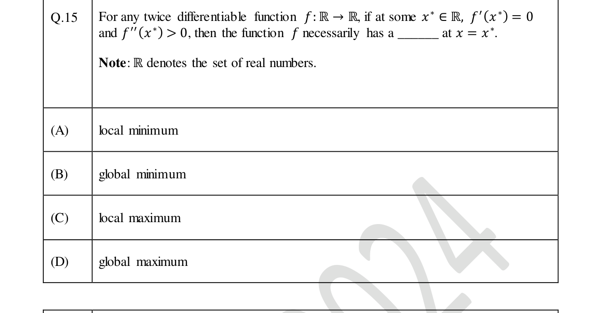
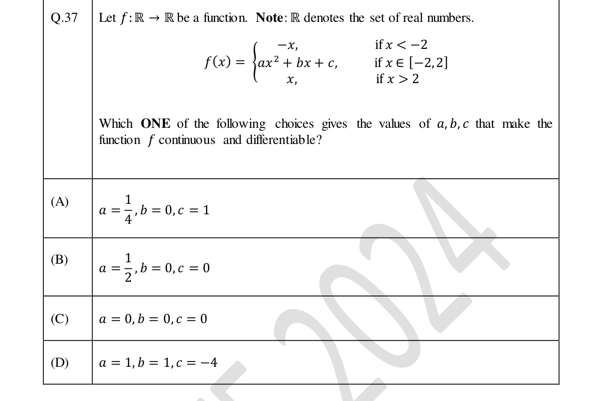
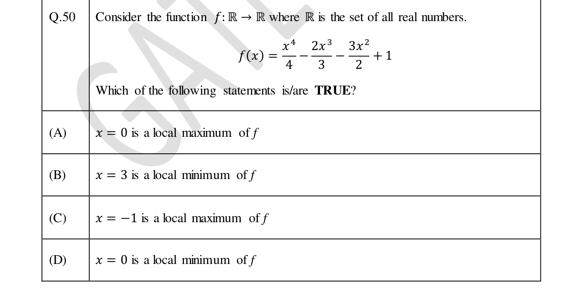
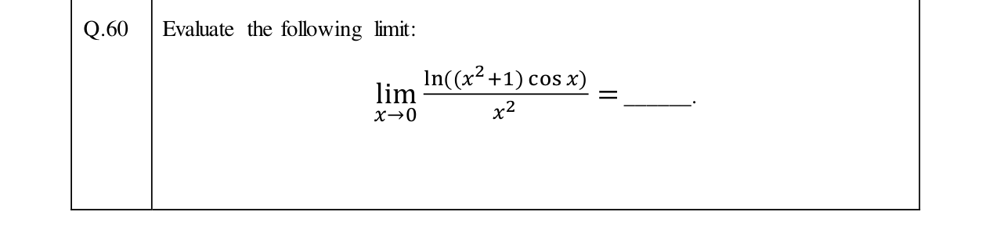

Real GATE DA 2024 questions from the Optimization part of our syllabus — shown exactly as in the paper. Attempt each (MCQ, MSQ or numerical) and check the official answer.
GATE DA 2024Univariate optimizationMCQ1 mark

Single correct (MCQ).
GATE DA 2024Continuity & differentiabilityMCQ2 marks

Single correct (MCQ).
GATE DA 2024Univariate optimizationMSQ2 marks

Multiple correct (MSQ) — select all that apply.
GATE DA 2024LimitsNAT2 marks

Numerical answer (NAT) — type a value and press Check.